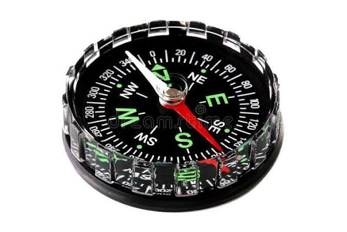
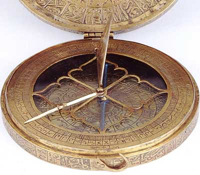
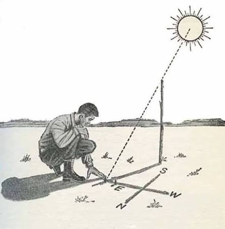
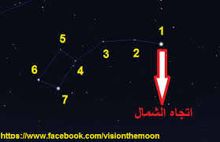

موقع مدرستي
مقدمة
لتحديد موقع أيّ مكان من حولنا، نستعمل الاتجاهات الأربع الرئيسة: الشرق والغرب والشمال والجنوب. فبها نتمكّن من تحديد موقع مدرستنا ومنزلنا والمحيط الذي نعيش فيه، ونتمكّن من توجيه أنفسنا عند التنقّل.
ما هي الاتجاهات الأربع الرئيسة؟ وكيف نحدّدها؟ وما هي الوسائل التي اعتمدها الإنسان لمعرفتها؟ وكيف نستعملها في حياتنا اليومية؟
I الاتجاهات الأربع الرئيسة
تنقسم الاتجاهات المعتمدة في تحديد الأمكنة إلى أربعة اتّجاهات رئيسة، وهي:
1. جهة الشرق
وهي الجهة التي تشرق منها الشمس، فتظهر عند الصباح الباكر من ناحية الشرق.
2. جهة الغرب
وهي الجهة التي تغرب منها الشمس، فتختفي عند المساء من ناحية الغرب.
3. جهة الشمال
وهي الجهة التي تتوسّط الشرق والغرب من أعلى.
4. جهة الجنوب
وهي الجهة التي تتوسّط الشرق والغرب من أسفل.
II البوصلة: آلة تحديد الاتجاهات
منذ القدم، عرف الإنسان الاتجاهات مهتديًا بالشمس نهارًا وبالنجوم ليلًا، ممّا مكّنه من التنقّل والتوجّه في البرّ والبحر.
إلاّ أنّ صنع أجهزة مكّنته من معرفة الاتجاهات بسهولة، وأهمّها اختراع البوصلة التي تُعدّ آلة لتحديد الاتجاه. وقد صنعها العرب واستعملوها في أسفارهم، ثمّ تمّ تطويرها فيما بعد لتُصبح أداة دقيقة يستعملها الناس في كلّ مكان.
III مثال تطبيقي: كيف أعود إلى منزلي بالاتجاهات؟
لنأخذ مثالاً بسيطًا يوضّح لنا كيف نستعمل الاتجاهات في حياتنا اليومية. تخيّل أنّ التلميذ أمين يريد العودة من مدرسته إلى منزله بعد نهاية الدروس.
1. الخطوة الأولى: تحديد جهة الانطلاق
خرج أمين من باب المدرسة، ولاحظ أنّ الباب يفتح على جهة الشرق. فبدأ مسيره نحو الشرق.
2. الخطوة الثانية: السير نحو الشرق
سار أمين نحو الشرق حوالي 300 متر، حتى بلغ تقاطع الطرق القريب من المدرسة.
3. الخطوة الثالثة: الانعطاف نحو الشمال
عند التقاطع، انعطف أمين نحو الشمال، فمرّ بجانب الحديقة العمومية. سار في هذا الاتجاه حوالي 150 مترًا.
4. الخطوة الرابعة: الانعطاف نحو الغرب والوصول
ثمّ انعطف أمين نحو الغرب، فوجد منزله على يمينه بعد حوالي 100 متر. وهكذا تمكّن أمين من الوصول إلى منزله مستعينًا بالاتجاهات الأربع، دون أن يضلّ الطريق.
ويمكننا تلخيص مسار أمين في الجدول التالي:
| الخطوة | الاتجاه | المسافة | المعلم |
|---|---|---|---|
| 1 | جهة الشرق | 300 متر | من باب المدرسة إلى تقاطع الطرق |
| 2 | جهة الشمال | 150 متر | بجانب الحديقة العمومية |
| 3 | جهة الغرب | 100 متر | الوصول إلى المنزل |
خاتمة
تساعدنا الاتجاهات الأربع (الشرق، والغرب، والشمال، والجنوب) على تحديد موقع الأمكنة من حولنا، وعلى رأسها موقع مدرستنا ومنزلنا. وقد عرف الإنسان هذه الاتجاهات منذ القدم بواسطة الشمس والنجوم، ثمّ طوّر أدوات دقيقة لتحديدها وأهمّها البوصلة، التي ما تزال تُستعمل إلى اليوم في التنقّل والسفر.
📖 تعريفات
🧭 الاتجاهات الأربع
- جهة الشرق: الجهة التي تشرق منها الشمس، فتظهر عند الصباح الباكر من ناحية الشرق.
- جهة الغرب: الجهة التي تغرب منها الشمس، فتختفي عند المساء من ناحية الغرب.
- جهة الشمال: الجهة التي تتوسّط الشرق والغرب من أعلى.
- جهة الجنوب: الجهة التي تتوسّط الشرق والغرب من أسفل.
📌 أخرى
- الاتجاهات: أربع جهات رئيسة تُستعمل لتحديد موقع الأمكنة، وهي: الشرق والغرب والشمال والجنوب.
- البوصلة: آلة لتحديد الاتجاه، صنعها العرب واستعملوها في أسفارهم، ثمّ تمّ تطويرها فيما بعد لتصبح أداة دقيقة يستعملها الناس في كلّ مكان.
- المسار: الطريق الذي يسلكه الشخص للانتقال من مكان إلى آخر، ويتكوّن من سلسلة من الاتجاهات والمسافات، مثل مسار التلميذ من المدرسة إلى المنزل.
🗺️ وسائل تحديد الاتجاهات



